AI templates: visibility and scanning iPhone 15 Pro Max simulator, iOS 27. The saved templates were intact; the nested lazy grid left the first row blank. Eager rows render the same cards immediately. The equipment section now supports repeated AI scans while preserving preferences.
Ticket and verification record
Before and after saving three templates 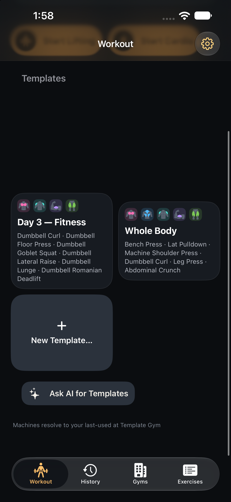
Before — first two cards absent, Day 3 visible. 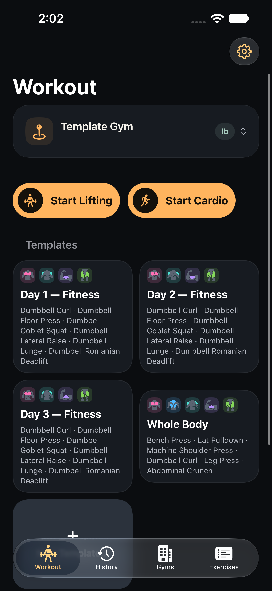
After — same three generated templates plus the existing Whole Body template. Renamed template entry 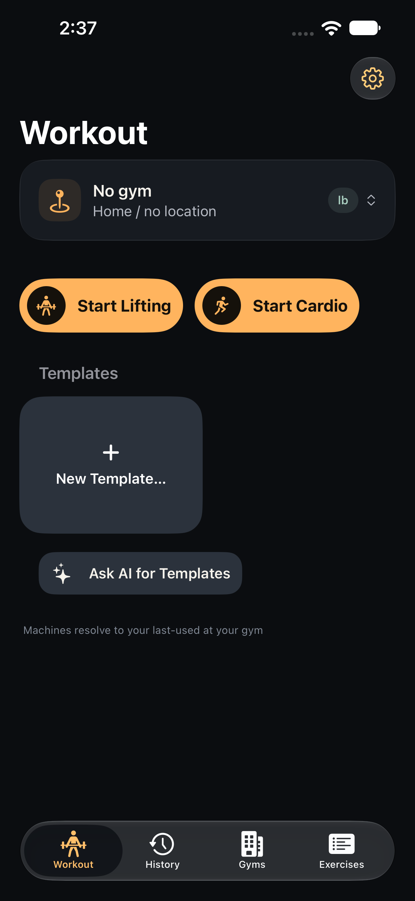
Default — same fixture and state. 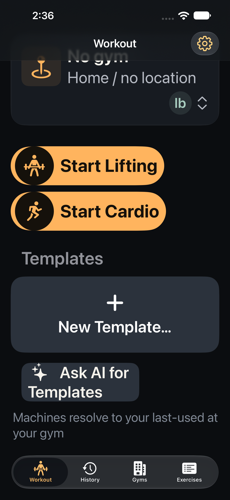
AccessibilityL — same fixture and state. Choose a gym without leaving setup 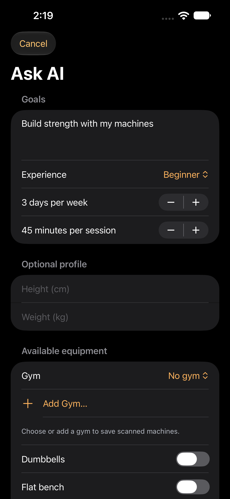
Default — same fixture and state. 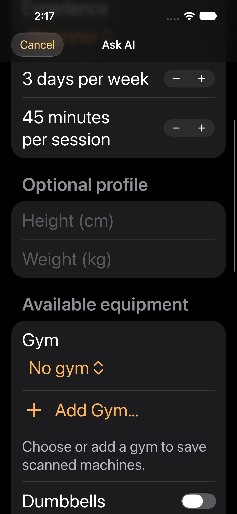
AccessibilityL — same fixture and state. Scan even when no machines are saved 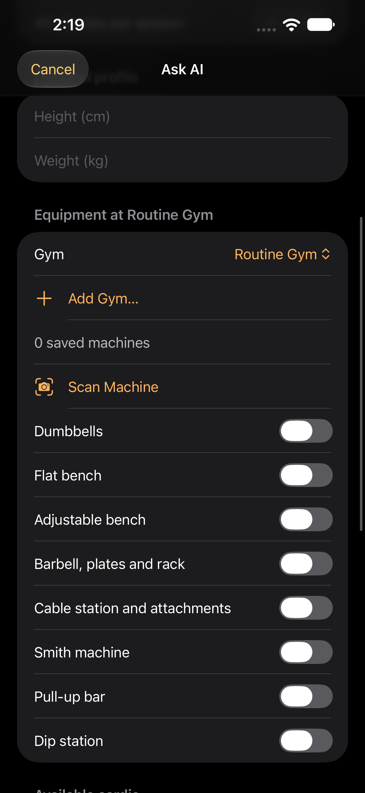
Default — same fixture and state. 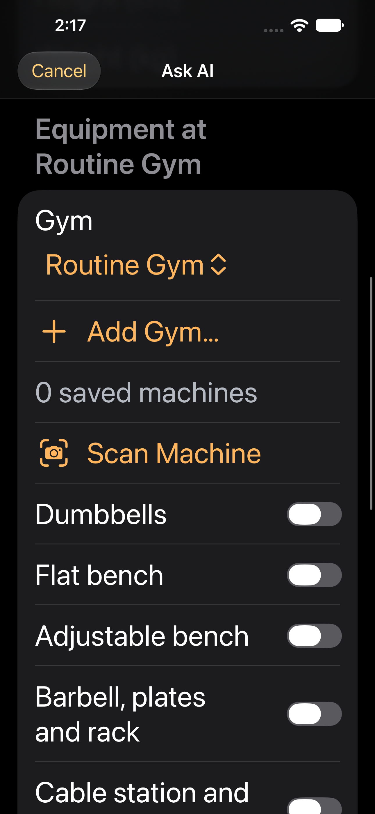
AccessibilityL — same fixture and state. Equipment after two confirmed scans 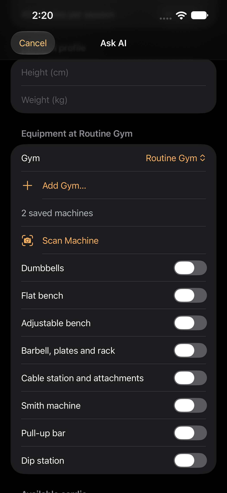
Default — same fixture and state. 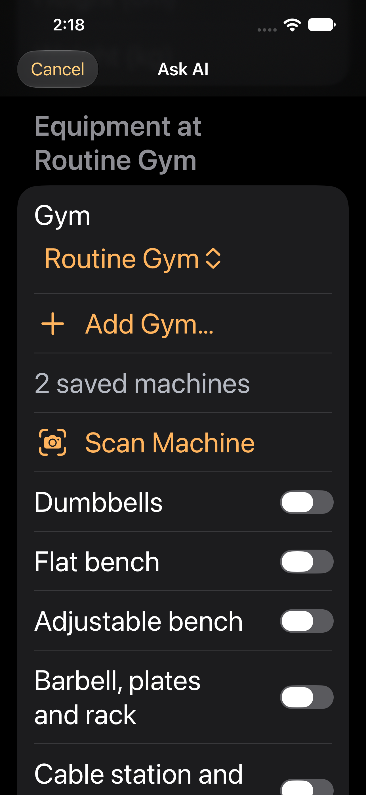
AccessibilityL — same fixture and state. One AI camera flow 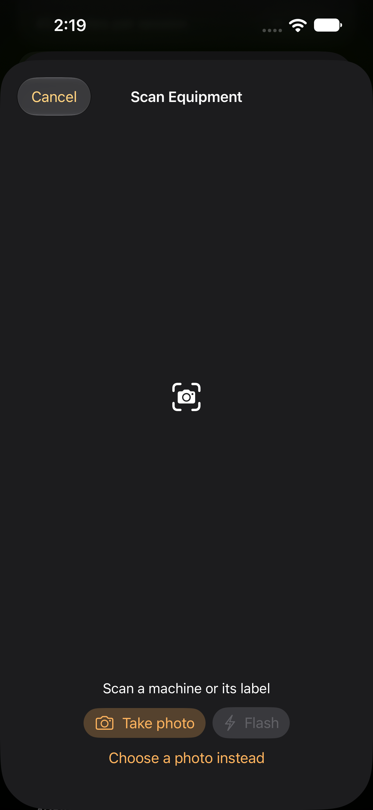
Default — same fixture and state. 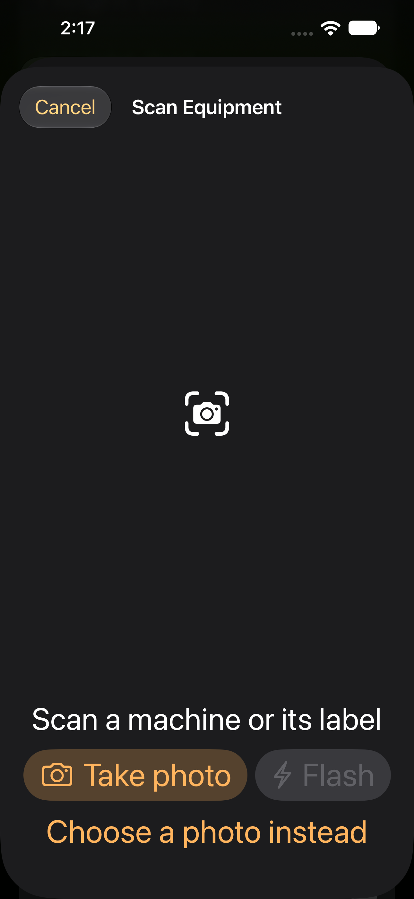
AccessibilityL — same fixture and state. Editable AI proposal 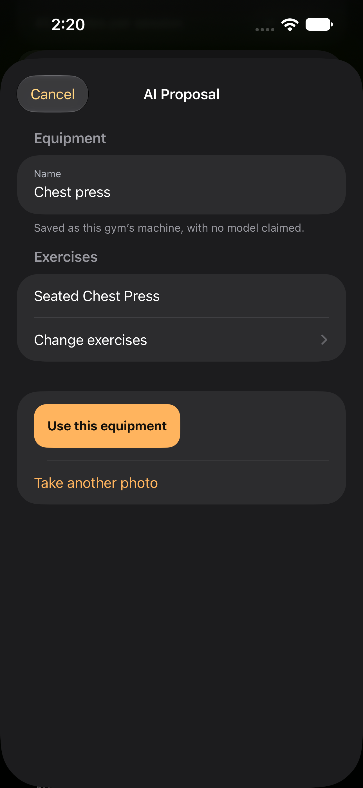
Default — same fixture and state. 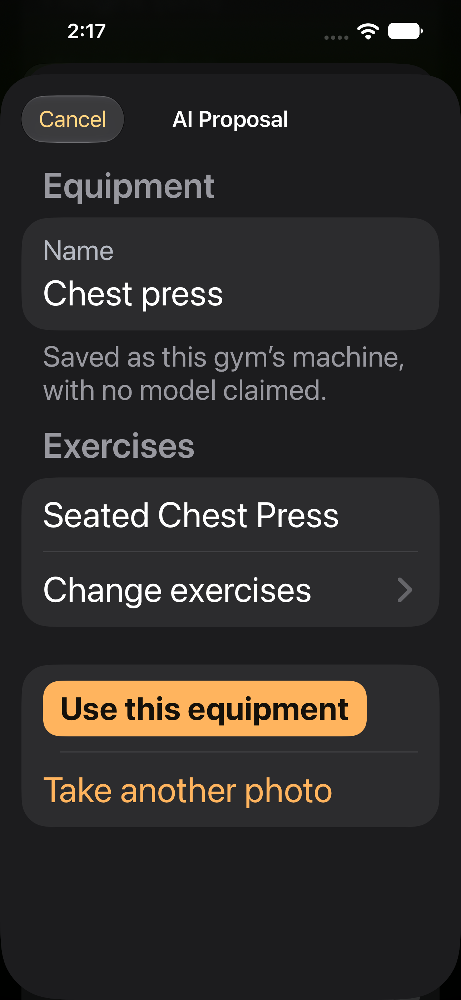
AccessibilityL — same fixture and state. Add the confirmed machine 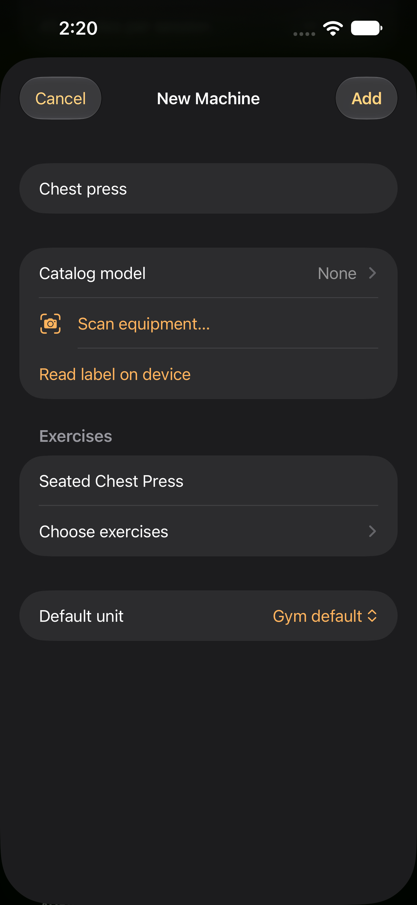
Default — same fixture and state. 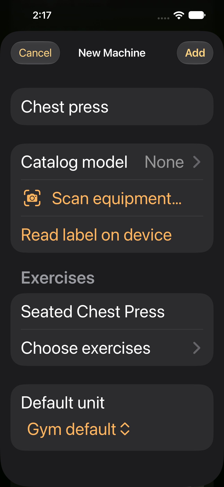
AccessibilityL — same fixture and state. Generated templates at both text sizes Default — same fixture and state. 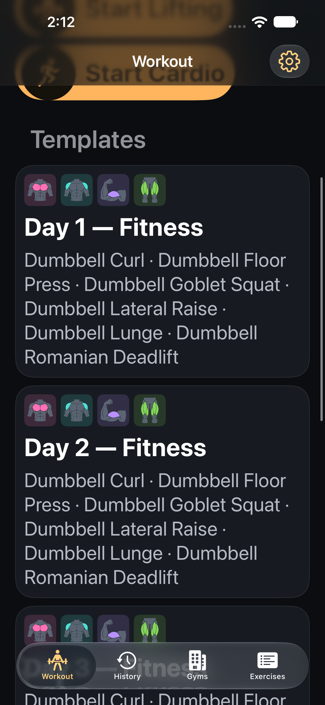
AccessibilityL — same fixture and state.